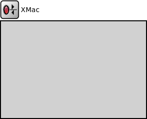

Package: inet.linklayer.xmac
XMac
compound moduleImplementation of X-MAC. See C++ documentation for details.
Inheritance diagram
The following diagram shows inheritance relationships for this type. Unresolved types are missing from the diagram.
Extends
| Name | Type | Description |
|---|---|---|
| MacProtocolBase | simple module |
Module base for different MAC protocols. |
Parameters
| Name | Type | Default value | Description |
|---|---|---|---|
| interfaceTableModule | string | ||
| address | string | "auto" |
MAC address as hex string (12 hex digits), or "auto". "auto" values will be replaced by a generated MAC address in init stage 0. |
| debug | bool | false |
debug switch |
| stats | bool | true |
collect statistics? |
| slotDuration | double | 1s |
BMAC specific parameters how long is one slot? |
| checkInterval | double | 0.01s |
how long is the check interval (CCA)? |
| animation | bool | true |
should we animate the nodes with colors depending on their state or not? |
| bitrate | double | 19200 bps |
bit rate |
| txPower | double | 50 mW |
tx power |
| useMACAcks | bool | false |
should mac send and expect acknowledgments? |
| macMaxFrameRetries | int | 3 |
maximum number of frame retransmission only used when usage of MAC acks is enabled |
| headerLength | int | 80b |
length of MAC headers |
| ctrlFrameLength | int | headerLength | |
| mtu | int | 0B |
mtu |
| maxTxAttempts | int | 2 |
Maximum transmission attempts per data packet, when ACKs are used |
| radioModule | string | "^.radio" |
The path to the Radio module //FIXME remove default value |
Properties
| Name | Value | Description |
|---|---|---|
| display | i=block/rxtx | |
| class | XMac | |
| selfMessageKinds | inet::XMacTypes |
Gates
| Name | Direction | Size | Description |
|---|---|---|---|
| upperLayerIn | input | ||
| upperLayerOut | output | ||
| lowerLayerIn | input | ||
| lowerLayerOut | output |
Signals
| Name | Type | Unit |
|---|---|---|
| packetDropped | inet::Packet |
Source code
// // Implementation of X-MAC. // See C++ documentation for details. // module XMac extends MacProtocolBase like IMacProtocol { parameters: string address @mutable = default("auto"); // MAC address as hex string (12 hex digits), or // "auto". "auto" values will be replaced by // a generated MAC address in init stage 0. // debug switch bool debug = default(false); //collect statistics? bool stats = default(true); // BMAC specific parameters // how long is one slot? double slotDuration @unit(s) = default(1s); // how long is the check interval (CCA)? double checkInterval @unit(s) = default(0.01s); // should we animate the nodes with colors depending on their state or // not? bool animation = default(true); // bit rate double bitrate @unit(bps) = default(19200 bps); //tx power double txPower @unit(W) = default(50 mW); //should mac send and expect acknowledgments? bool useMACAcks = default(false); // maximum number of frame retransmission // only used when usage of MAC acks is enabled int macMaxFrameRetries = default(3); // length of MAC headers int headerLength @unit(b) = default(80b); int ctrlFrameLength @unit(b) = default(headerLength); // mtu int mtu @unit(B) = default(0B); // Maximum transmission attempts per data packet, when ACKs are used int maxTxAttempts = default(2); string radioModule = default("^.radio"); // The path to the Radio module //FIXME remove default value @class(XMac); @signal[packetDropped](type=inet::Packet); @selfMessageKinds(inet::XMacTypes); }File: src/inet/linklayer/xmac/XMac.ned
 This documentation is released under the Creative Commons license
This documentation is released under the Creative Commons license